Materials
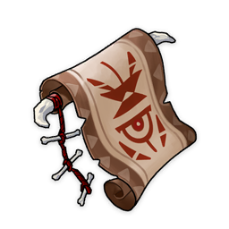Sealed Scroll
Sealed Scroll
Trophies
2★
Character and Weapon Enhancement Material
An old scroll lacking in detail and clarity. By following the images on it, some magical creatures can recreate a small part of its magic.
Sources:
Crafted
Used by character ascensions and talents:


Used by character talents:


Used by weapon ascensions:

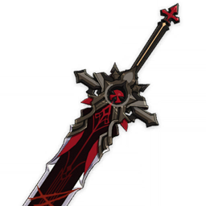
Wolf's Gravestone
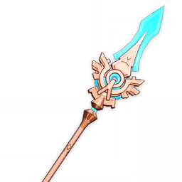
Skyward Spine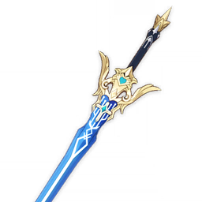
Freedom-Sworn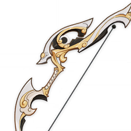
Fading Twilight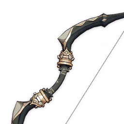
Royal Bow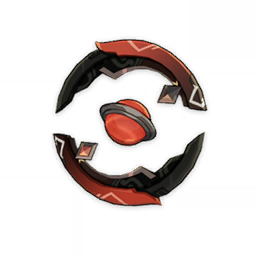
Blackcliff Agate
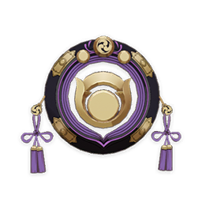
Hakushin Ring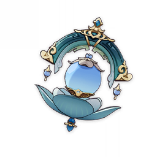
Sacrificial Jade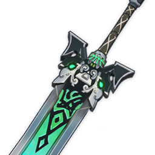
Rainslasher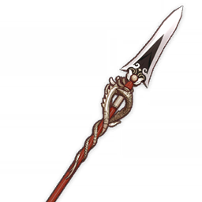
Dragon's Bane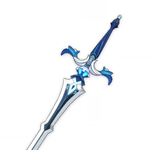
Sacrificial Sword
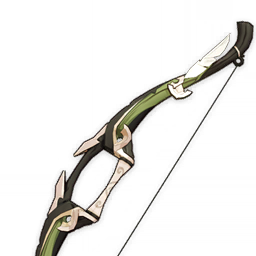
Recurve Bow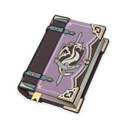
Thrilling Tales of Dragon Slayers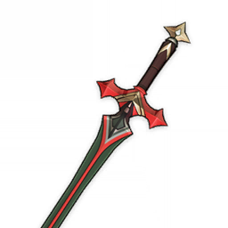
Traveler's Handy Sword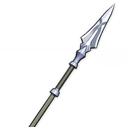
Iron Point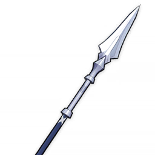
Beginner's Protector